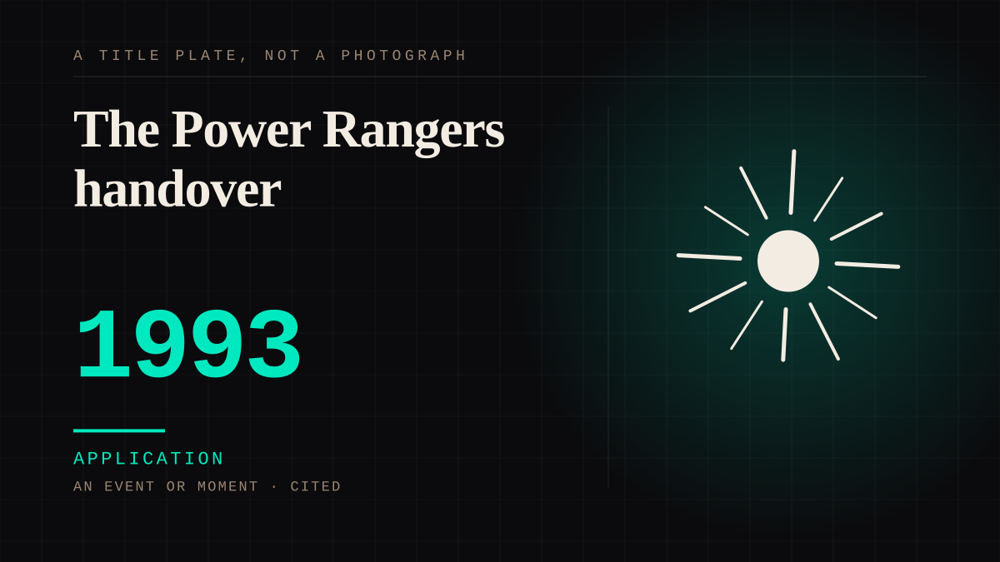

An event or moment · 1993 · Television
The Power Rangers handover
A costume is put on by a new actor and the audience transfers its entire attachment to whoever is now inside it. Running five days a week, in front of millions of children, with nobody pretending otherwise.

The most complete parasocial handover ever broadcast, and the closest thing television has to a controlled experiment. The audience knew the person had changed. They transferred the feeling anyway, instantly, and enjoyed knowing they were doing it.
Application. One-sided attachment put to work on purpose. Creator economies, community, fandom as infrastructure, and the things that genuinely help people. Not automatically good - a tool with an obvious use is a tool that will also get a bad one.
Consideration. The part where somebody stops and thinks. The research, the diagnosis, the ethics, the lawsuits, the regulators. Roughly fifty years of arguing with itself about whether this is a relationship.
Where it sits
1950 1950-1999 · 1993 1999
Provenance · 1 source record(s)
- unverifiedNo specific claim is recorded against this source. The record is a pointer to the work in general; the entry's own prose is the argument and is not sourced line by line.Mighty Morphin Power Rangers, 1993-
Connected · 2 out, 1 in
It sits in
The full timeline → · The database → · See it in the atlas →